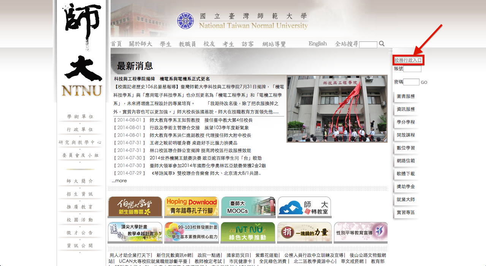
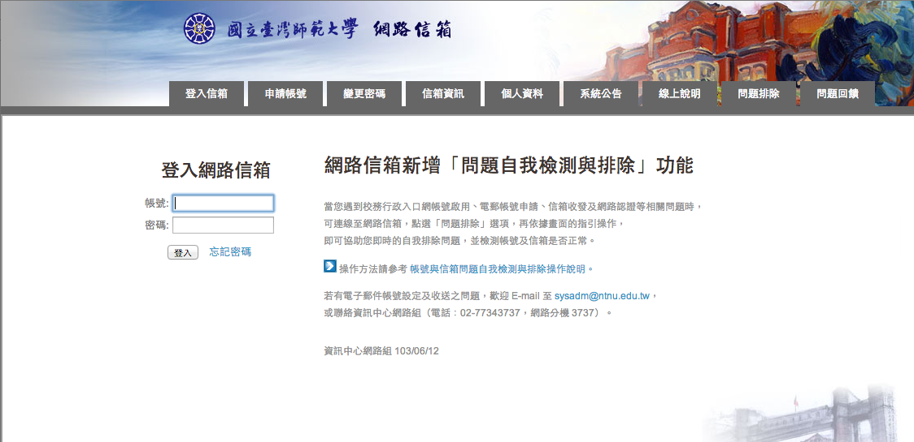
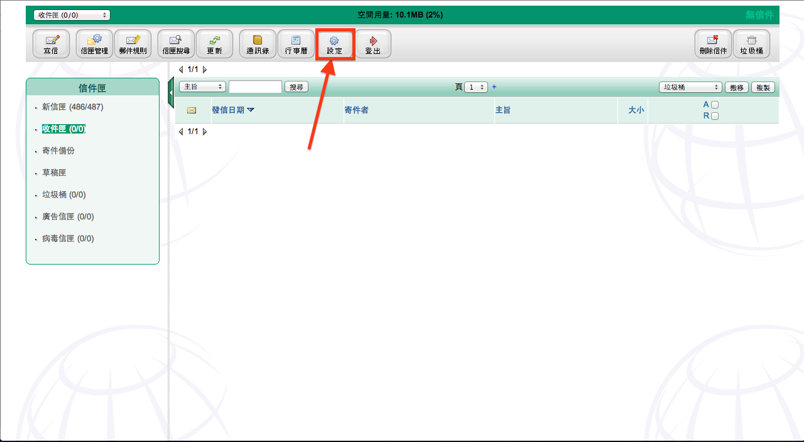
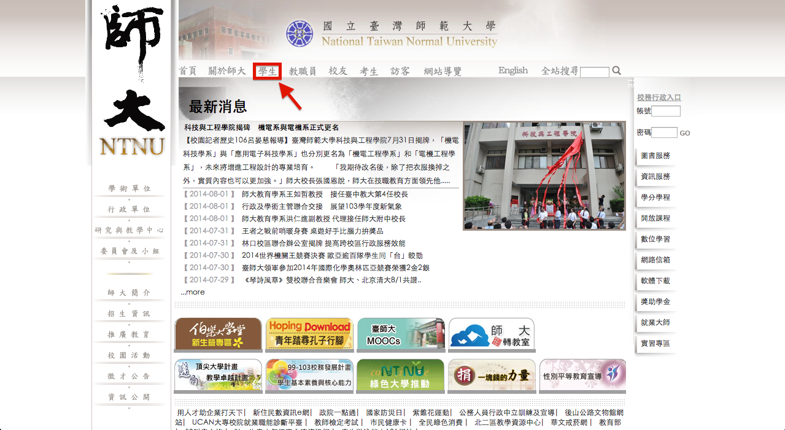
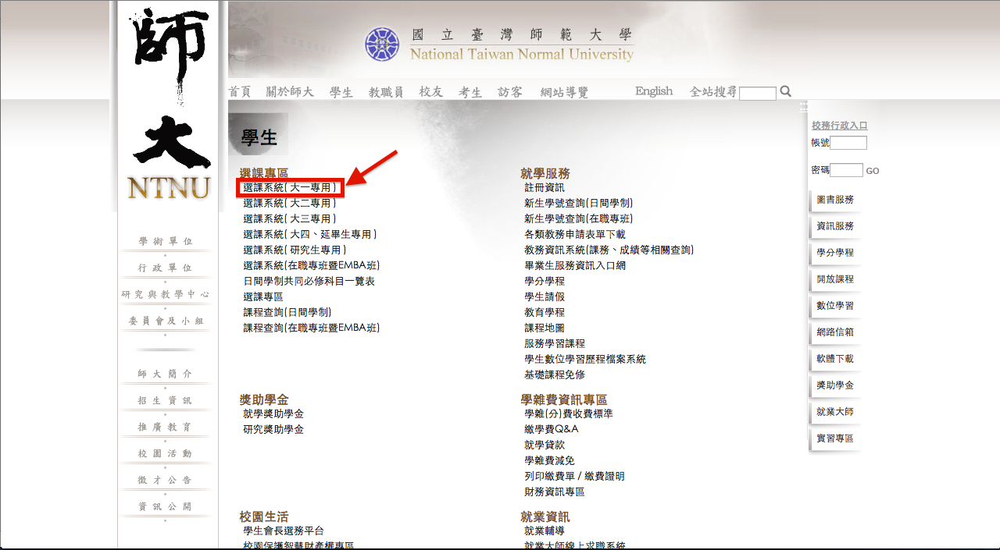
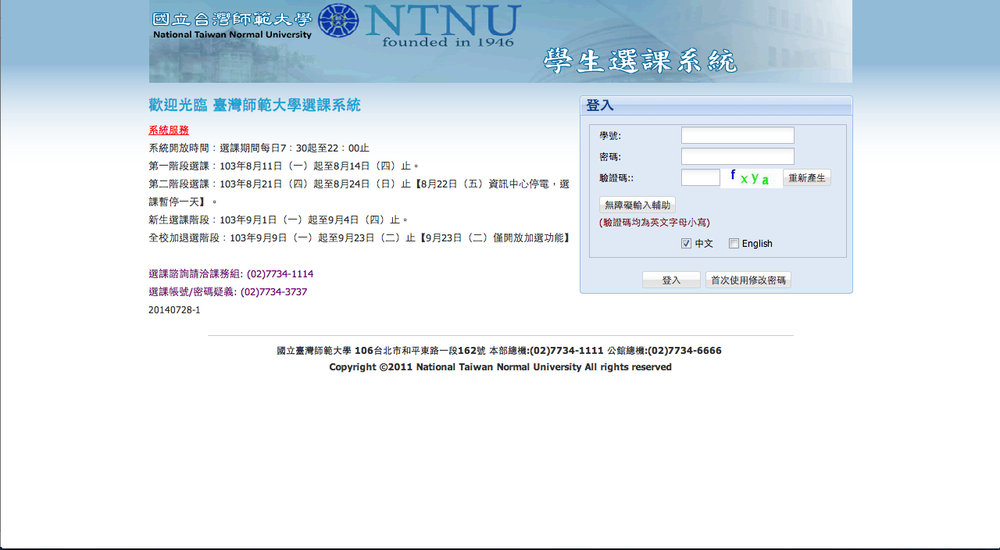
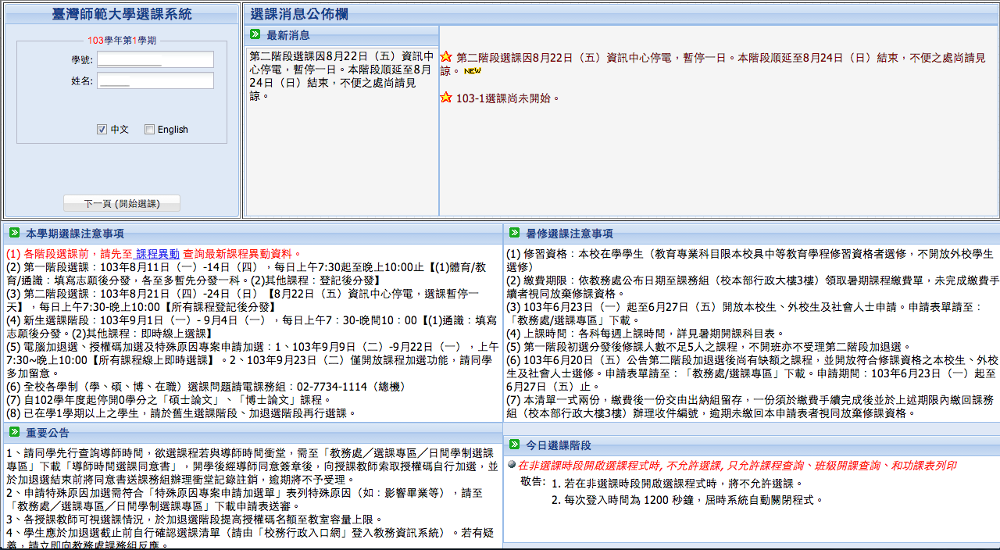

- NTNU
- CSIE
- to 107
到了大學，最重要的第一步，就是選課啦∼
現在就讓我來一步一步教你怎麼選課吧！
首先要先開通學校的帳號，就像打線上遊戲要先註冊一個帳號一樣
我們要進師大，就要先開通『台師大online』的帳號
首先，到師大的首頁，在右邊有一個『校務行政入口』
{kind=link}
進去後，把帳號密碼打上去
帳號：學號 密碼：身分證字號
{kind=link}
這個帳號密碼非常重要，它將伴隨著你度過大學生涯，所以要好好記住你的帳號密碼喔！
設定好了帳號密碼之後，還不能馬上去選課喔！
學校很貼心的弄了一個信箱送給你，在選課之前，要先把學校信箱的信轉寄到自己常用的信箱中。
學校常常都會寄信到學校信箱，這樣才不會漏掉一些重要的信件喔！
首先，還是到學校官網去吧∼
在剛剛的校務行政入口下面，找到『網路信箱』
{kind=link}
進去之後，打上你剛剛的帳號密碼（跟你說了，很重要吧∼）
{kind=link}
進去之後，在上面找到『設定』這個選項
{kind=link}
在下面，看到『信件轉寄到』，應該不用我再教你怎麼做吧
趕快打上你常用的信箱，這樣才不會收不到信喔！
{kind=link}
打好之後，要拉到最下面，按下『儲存』才會有效喔！
p.s.：雖然轉寄過去了，但是你的信箱有可能會把它放到『垃圾信件匣』裡面，所以還是要去垃圾信裡面看喔！
經過了這麼多步驟之後，終於可以開始選課了∼
現在我們就開始吧！
第一步，一樣是到師大官網，點『學生』
{kind=link}
在左邊的選課專區裡面，找到『選課系統（大一專用）』
{kind=link}
又看到登入頁面了，趕快登入你的帳號，在左邊有一些跟選課相關的日期資訊《新生選課時間：9/1 ∼ 9/4》
{kind=link}
這裡就是登入之後的頁面，有選課的相關消息及一些時間。按『下一頁』之後，就可以開始選課了。
{kind=link}
進到這裡之後，在下面白色的地方，會顯示你已經選到的課。
系統會幫你把你的必修課，都先選好，所以不用擔心漏選什麼必修。
在結束時間下面，有一個『查詢課程』，點進去之後就可以查其他的課了。
『查詢課程』的下一行，可以列印課表，系統會幫你把已經選到的課，填進課表中，自動產生出課表。
{kind=link}
這裡可以搜尋學校的課程，可以找到師大全部的課程，如果你想修外系的課，也可以在這裡找到。
中間的『科目類別』，可以找到你要找的課。
『一般科目』，可以看那個系的必修跟選修，一進來系統會幫你預選資工系，所以只要點這個選項，然後查詢，就可以看到所有的必選修。
右邊的『時間條件』，可以勾選你要的時段，他就只會找那個時間裡面的課。
{kind=link}
全校加退選階段：9/9 ∼ 9/23
開學之後，『加退選階段』還可以再選課或退課
如果在之前的選課時間，選到不喜歡的課，或是還想要在加選其他的課，都可以在這個時間再選課